Nebula siempre ha sido una de esas heroínas de Apoyo capaces de hacer que un causante de daño parezca imparable, pero la versión anterior exigía un posicionamiento perfecto, sincronización y un poco de suerte. Su rework cambia esa sensación. Ataca con menos frecuencia a medida que progresa, pero sus curaciones y mejoras se vuelven mucho más fiables, convirtiéndola en una auténtica directora del campo de batalla.
Las nuevas habilidades de Reliquia Legendaria resuelven varios de los problemas más antiguos de Nebula: Serenidad puede purificar a todo el equipo, Equilibrio potencia a dos aliados al mismo tiempo, Desarmonía protege contra el Daño con el Tiempo y Meditación Profunda mantiene activas durante más tiempo las mejoras y los efectos del primer Artefacto. En esta guía te mostraré qué significan estos cambios en batallas reales, qué Talismán prefiero y dónde generan el mayor impacto tus recursos.
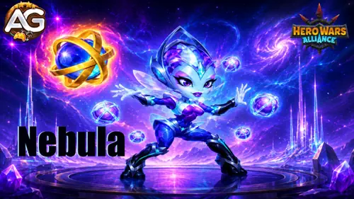
Guía de Nebula - Hero Wars Alliance, un juego desarrollado por Nexters.
Nebula es una heroína de Apoyo de la línea central y del Camino del Progreso cuyo valor proviene de mejorar a los aliados cercanos. Puede curar y purificar, acelerar a los aliados situados detrás de ella, bloquear el Daño con el Tiempo recibido, quemar la Energía enemiga y proporcionar enormes mejoras de Ataque Físico y Mágico.
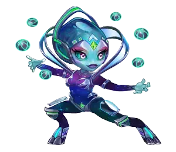
Clase Principal: Apoyo
Posición: Línea Central
Estadística Principal: Agilidad
Facción: Camino del Progreso
Mejora del Reino: Ataque/Defensa de los Lanceros +120%
Mejores Sinergias: Eva, Isaac, Judge y Julius
Lo emocionante del rework es su consistencia. Antes, Equilibrio podía aplicarse al aliado equivocado o no coincidir con el momento exacto en que un causante de daño usaba su habilidad definitiva. En el nivel 20 de Reliquia Legendaria, Nebula mejora simultáneamente a los dos aliados más cercanos, por lo que el equipo ya no necesita una ventana de sincronización afortunada para recibir su mayor ventaja ofensiva.
Desarmonía también le otorga a Nebula una función clara como counter. Su protección bloquea el Daño con el Tiempo recibido por Nebula y los aliados situados detrás de ella, algo especialmente valioso contra Iris y otros héroes que generan presión mediante efectos de daño repetido.
Valoración General de Nebula en el Meta
Esta valoración editorial refleja su conjunto de habilidades reformulado, el valor de sus Reliquias Legendarias, su impacto en el equipo y su dependencia de un posicionamiento correcto.
Control de Masas (CC): ★★☆☆☆ — La quema de Energía altera el ritmo enemigo, pero no posee un aturdimiento fuerte ni silencio.
Daño Infligido: ★★☆☆☆ — Su propio daño es secundario frente al daño que permite causar a sus aliados.
Sinergia de Equipo: ★★★★★ — La curación, purificación, velocidad, Estadística Principal, Ataque y prolongación de Artefactos benefician a muchas formaciones.
Autosuficiencia: ★★★☆☆ — Puede curarse o mejorarse a sí misma en formaciones limitadas, pero su mayor valor sigue dependiendo de los aliados.
Ventajas y Desventajas de Nebula - Hero Wars Alliance
✅ Ventajas
Enorme apoyo de Ataque Físico y Mágico mediante Equilibrio.
Curación y purificación para todo el equipo tras la mejora de Reliquia de nivel 10.
Bloquea el Daño con el Tiempo y ayuda a contrarrestar a Iris.
Prolonga 2 segundos las mejoras de los aliados y los efectos del primer Artefacto.
Encaja de forma natural en núcleos fuertes del Camino del Progreso y de Esquiva.
❌ Desventajas
Gran parte de su poder está bloqueado tras niveles altos de Reliquia Legendaria.
El posicionamiento determina qué aliados reciben varios de sus efectos.
Inflige poco daño propio y no proporciona un control de masas fuerte.
El Talismán de la Consistencia sacrifica Armadura y Esquiva a cambio de poder ofensivo.
Nebula — Comparación de Estadísticas Máximas con Talismanes
Estadísticas Máximas de Nebula con Ambos Talismanes
Estadística
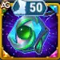
Talismán de la Consistencia
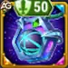
Talismán de las Estrellas
Inteligencia
3.963
3.963
Agilidad
16.704
14.704
Fuerza
3.803
3.803
Salud
952.039
952.039
Ataque Físico
150.958
131.758
Ataque Mágico
26.995
26.995
Armadura
55.518,8
67.318,8
Defensa Mágica
26.366,2
26.366,2
Tenacidad
3.073
3.073
Esquiva
8.654,9
16.244,9
Aplastamiento
1.564
1.564
La decisión es clara pero importante: Consistencia otorga a Nebula 19.200 más de Ataque Físico, fortaleciendo directamente cada habilidad reformulada que escala con esa estadística. Estrellas proporciona 11.800 más de Armadura y 7.590 más de Esquiva, por lo que es la respuesta defensiva cuando no puede sobrevivir el tiempo suficiente para apoyar al equipo.
Guía de Talismanes de Nebula - Hero Wars Alliance
Solo el Talismán equipado concede sus bonificaciones, a diferencia de los aspectos, cuyas bonificaciones desbloqueadas permanecen activas. Por eso la elección de Nebula debe adaptarse a la batalla: maximiza por defecto su progresión de Ataque Físico y cambia a defensa únicamente cuando la presión enemiga la elimine demasiado pronto.
1 - Talismán de la Consistencia
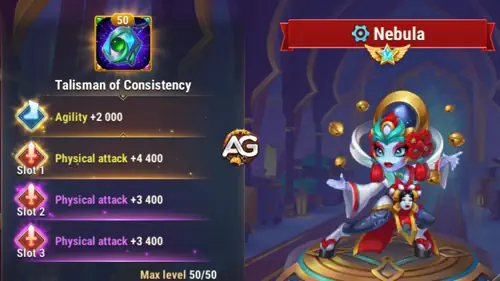
Talismán de la Consistencia de Nebula, Hero Wars Alliance.
La ranura principal concede Agilidad +2.000. Como la Agilidad es la estadística principal de Nebula, esto se convierte en Ataque Físico +6.000 y Armadura +2.000. Las tres repeticiones optimizadas añaden otros 13.200 de Ataque Físico, para un total de +19.200 de Ataque Físico.
Estadística Principal del Talismán de la Consistencia
Talismán
Estadística Principal
Bonificación Derivada
Consistencia
Agilidad +2.000
Ataque Físico +6.000 Armadura +2.000
Ranuras de Repetición del Talismán de la Consistencia
Ranura 1
Ranura 2
Ranura 3
Bonificación Total de Repetición
+4.400
+4.400
+4.400
Ataque Físico +13.200
2 - Talismán de las Estrellas
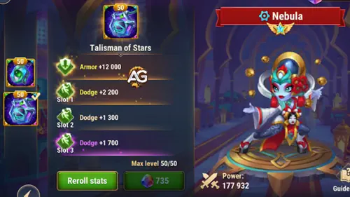
Talismán de las Estrellas de Nebula, Hero Wars Alliance.
Este Talismán defensivo concede Armadura +12.000 en su ranura principal y Esquiva +6.600 entre sus tres repeticiones. Reduce el límite de Ataque Físico de Nebula, pero puede ser la elección correcta contra equipos físicos cuando la supervivencia es lo único que le impide completar su ciclo de apoyo.
Estadística Principal del Talismán de las Estrellas
Talismán
Estadística Principal
Estrellas
Armadura +12.000
Ranuras de Repetición del Talismán de las Estrellas
Ranura 1
Ranura 2
Ranura 3
Bonificación Total de Repetición
+2.200
+2.200
+2.200
Esquiva +6.600
Consejos de Alexandre: Recomiendo el Talismán de la Consistencia para la mayoría de las batallas. El daño, la curación, la mejora de Estadística Principal y el enorme aumento de Equilibrio de Nebula dependen del Ataque Físico, por lo que el Talismán ofensivo mejora toda su identidad. Equipa el Talismán de las Estrellas cuando una formación física peligrosa la derrote antes de que esos efectos puedan marcar la diferencia.
Prioridad de Mejora de las Habilidades de Reliquia Legendaria de Nebula - Hero Wars Alliance
El rework de Nebula transforma la sincronización precisa en un impulso fiable para todo el equipo. A continuación se muestran todas las habilidades en el orden del juego, con prioridades prácticas para principiantes y jugadores experimentados.
0 - Ataque Básico
Descripción en el juego: El ataque básico de Nebula inflige daño físico.
Explicación de la habilidad: Antes de que Equilibrio cambie sus ataques al modo de Apoyo, cada golpe básico inflige un 100% de Ataque Físico. Con estadísticas máximas, esto equivale a 150.958 con el Talismán de la Consistencia o 131.758 con el Talismán de las Estrellas.
Fórmula con el Talismán de la Consistencia
Fórmula 1:Daño Físico: 150.958 (100% de Ataque Físico)
Fórmula con el Talismán de las Estrellas
Fórmula 1:Daño Físico: 131.758 (100% de Ataque Físico)
Tiempo de recarga: 5,2 segundos
Retraso de la animación: 0,66 segundos
Tipo de daño: Daño Físico
Prioridad de evolución:Baja — Nebula está diseñada para apoyar, y su rework hace que ataque con menos frecuencia a medida que mejoran sus bonificaciones.
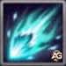
1.ª Habilidad – Proyección Astral
Descripción en el juego: Lanza un proyectil que inflige daño a los enemigos dentro de su área de efecto y quema su Energía al activarse. El daño y la quema de Energía se dividen por igual entre los enemigos afectados. Si no se activa manualmente, el proyectil explota automáticamente al alcanzar al enemigo más lejano.
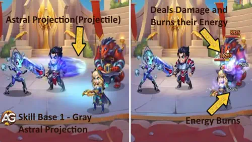
Proyección Astral, Hero Wars Alliance.
Explicación de la habilidad: Puedes activar el proyectil donde alcance a los objetivos más importantes o dejar que viaje hasta el enemigo más lejano. Su Daño Físico total sigue la fórmula 120% de Ataque Físico + 24.000, mientras que la quema total de Energía es de 100. Como ambos valores se reparten entre los enemigos afectados, cuantos menos objetivos haya, mayor será la presión sobre cada uno.
Activación: Manual o automática en el enemigo más lejano
Prioridad de evolución:Media — útil para interrumpir las habilidades definitivas enemigas, aunque las mejoras y la protección de Nebula suelen decidir más batallas.
2.ª Habilidad – Serenidad
Descripción en el juego: Restaura la Salud de los dos aliados más cercanos y elimina sus efectos negativos. Si solo hay un aliado cercano, Nebula aplica esta habilidad a ese aliado y a sí misma.
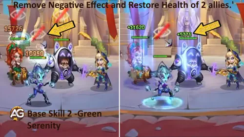
Serenidad, Hero Wars Alliance.
Explicación de la habilidad: Serenidad combina curación y purificación en una sola acción. La Salud recuperada sigue la fórmula 40% de Ataque Físico + 9.000, por lo que el Talismán de la Consistencia mejora su progresión. La probabilidad de eliminación se reduce cuando el enemigo que aplicó el efecto negativo supera el nivel 120.
Fórmula con el Talismán de la Consistencia
Fórmula 1:Salud recuperada: 69.383 (40% de Ataque Físico + 9.000)
Fórmula con el Talismán de las Estrellas
Fórmula 1:Salud recuperada: 61.703 (40% de Ataque Físico + 9.000)
Prioridad de evolución:Alta — mantener activos a dos aliados cercanos es valioso, especialmente cuando el control o los efectos negativos interrumpirían tu plan de daño.
2.ª Habilidad – Serenidad Mejorada con Reliquia Legendaria: Nivel 10
Descripción en el juego: Cura a Nebula y a todos los aliados, eliminando sus efectos negativos.
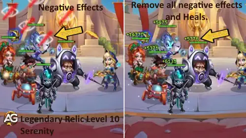
Mejora Legendaria de Serenidad, Hero Wars Alliance.
Explicación de la habilidad: Esta mejora transforma Serenidad de un rescate local en una recuperación para todo el equipo. Nebula y cada aliado reciben la misma curación de 40% de Ataque Físico + 9.000 y la purificación.
Fórmula con el Talismán de la Consistencia
Fórmula 1:Salud recuperada para Nebula y cada aliado: 69.383 (40% de Ataque Físico + 9.000)
Fórmula con el Talismán de las Estrellas
Fórmula 1:Salud recuperada para Nebula y cada aliado: 61.703 (40% de Ataque Físico + 9.000)
Prioridad de evolución:Muy Alta — ampliar una curación y purificación de dos objetivos a todo el equipo es una de sus mayores mejoras de fiabilidad.
Información del Desbloqueo de Reliquia en el Nivel 10
Tabla: Información del Desbloqueo de Reliquia en el Nivel 10
Información
Valor
Fragmentos de Reliquia Necesarios (Niveles 2–10)
280
Total de Fragmentos de Reliquia Necesarios (Niveles 0–10)
330
Bonificación Total de Ataque Físico (Niveles 0–10)
+7.876
Bonificación Total de Salud (Niveles 0–10)
+39.459
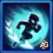
3.ª Habilidad – Desarmonía
Descripción en el juego: Aumenta un 25% la Velocidad de Movimiento y la Velocidad de Recarga de Habilidades de Nebula y de los aliados situados detrás de ella durante 5,0 segundos, y bloquea el Daño con el Tiempo recibido.
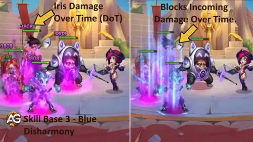
Desarmonía, Hero Wars Alliance.
Explicación de la habilidad: Durante 5 segundos, Nebula y los aliados situados detrás de ella obtienen un 25% de Velocidad de Movimiento y un 25% de Velocidad de Recarga de Habilidades. Más importante aún, bloquea el Daño con el Tiempo recibido. Esto responde directamente a efectos repetidos como la quemadura de la cuarta habilidad de Iris, el veneno de Yasmine, el daño de toxina de Heidi y otras fuentes de daño periódico.
Palabras clave: Mejora, Protección contra Daño con el Tiempo
Duración: 5 segundos
Objetivos: Nebula y los aliados situados detrás de ella
Prioridad de evolución:Muy Alta — la velocidad cambia el ritmo del combate, y la protección contra DoT puede desbaratar por completo a equipos construidos alrededor de Iris u otros héroes de daño repetido.
Consejos de Alexandre: Usa Desarmonía en Equipos del Progreso en Defensa para crear espacio y proteger a tu equipo de los efectos de DoT de Iris, que solía ser una gran amenaza en ese contexto.
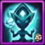
4.ª Habilidad – Equilibrio
Descripción en el juego: Los ataques básicos de Nebula pasan al modo de Apoyo. Cada vez que se activa esta habilidad, aumenta el Ataque Físico y Mágico de un aliado cercano durante 5,0 segundos. Si solo hay un aliado cercano, Nebula alterna esta habilidad entre ese aliado y ella misma.
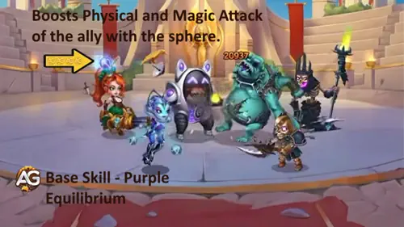
Equilibrio, Hero Wars Alliance.
Explicación de la habilidad: Este es el corazón del rework de Nebula. Sus ataques se convierten en acciones de apoyo que potencian a un aliado cercano durante cinco segundos. El Ataque Físico aumenta en 100% de Ataque Físico + 13.000 y el Ataque Mágico en 150% de Ataque Físico + 27.000.
Fórmula con el Talismán de la Consistencia
Fórmula 1:Aumento temporal de Ataque Físico: 163.958 (100% de Ataque Físico + 13.000)
Fórmula 2:Aumento temporal de Ataque Mágico: 253.437 (150% de Ataque Físico + 27.000)
Fórmula con el Talismán de las Estrellas
Fórmula 1:Aumento temporal de Ataque Físico: 144.758 (100% de Ataque Físico + 13.000)
Fórmula 2:Aumento temporal de Ataque Mágico: 224.637 (150% de Ataque Físico + 27.000)
Prioridad de evolución:Muy Alta — Equilibrio define por qué colocas a Nebula junto a un carry, y la inversión en Ataque Físico mejora su enorme rendimiento ofensivo.
4.ª Habilidad – Equilibrio Mejorado con Reliquia Legendaria: Nivel 20
Descripción en el juego: Aumenta simultáneamente el Ataque Físico y Mágico de los dos aliados más cercanos. Si solo hay un aliado cercano, Nebula aplica esta habilidad a ese aliado y a sí misma.
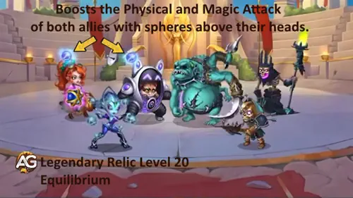
Mejora Legendaria de Equilibrio, Hero Wars Alliance.
Explicación de la habilidad: La mejora ahora alcanza a los dos aliados más cercanos al mismo tiempo. Para cada objetivo utiliza 100% de Ataque Físico + 13.000 para el Ataque Físico y 150% de Ataque Físico + 27.000 para el Ataque Mágico. Esto elimina la antigua apuesta por el objetivo correcto.
Fórmula con el Talismán de la Consistencia
Fórmula 1:Aumento de Ataque Físico para cada objetivo: 163.958 (100% de Ataque Físico + 13.000)
Fórmula 2:Aumento de Ataque Mágico para cada objetivo: 253.437 (150% de Ataque Físico + 27.000)
Fórmula con el Talismán de las Estrellas
Fórmula 1:Aumento de Ataque Físico para cada objetivo: 144.758 (100% de Ataque Físico + 13.000)
Fórmula 2:Aumento de Ataque Mágico para cada objetivo: 224.637 (150% de Ataque Físico + 27.000)
Prioridad de evolución:Muy Alta — este es el punto esencial de la Reliquia para cualquiera que desarrolle a Nebula como un Apoyo ofensivo serio.
Información del Desbloqueo de Reliquia en el Nivel 20
Tabla: Información del Desbloqueo de Reliquia en el Nivel 20
Información
Valor
Fragmentos de Reliquia Necesarios (Niveles 11–20)
800
Total de Fragmentos de Reliquia Necesarios (Niveles 0–20)
1.130
Bonificación Total de Ataque Físico (Niveles 0–20)
+21.711
Bonificación Total de Salud (Niveles 0–20)
+108.779
5.ª Habilidad – Poder del Equilibrio, Nueva Reliquia Legendaria: Nivel 1
Descripción en el juego: Cada 12,0 segundos, aumenta la Estadística Principal de los aliados más cercanos durante 4,0 segundos. Si no hay aliados cercanos, Nebula se mejora a sí misma. Solo afecta a los aliados que comenzaron la batalla con Nebula.
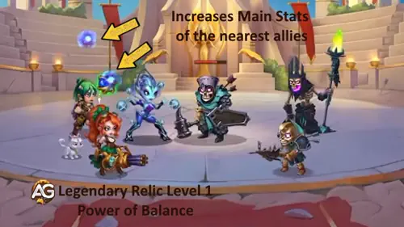
Poder del Equilibrio, Hero Wars Alliance.
Explicación de la habilidad: El aumento de la Estadística Principal equivale al 7% del Ataque Físico de Nebula. Puede aumentar el ataque, la Salud o la defensa según el aliado, además de ayudar en las comprobaciones contra Esquiva y Golpes Críticos.
Fórmula con el Talismán de la Consistencia
Fórmula 1:Aumento de la Estadística Principal: 10.567 (7% de Ataque Físico)
Fórmula con el Talismán de las Estrellas
Fórmula 1:Aumento de la Estadística Principal: 9.223 (7% de Ataque Físico)
Tiempo de recarga: 12 segundos
Duración: 4 segundos
Palabras clave: Mejora, Alianza
Prioridad de evolución:Alta — es el primer punto asequible de la Reliquia y añade una ventaja versátil de estadísticas antes de las mejoras más costosas.
Información del Desbloqueo de Reliquia en el Nivel 1
Tabla: Información del Desbloqueo de Reliquia en el Nivel 1
Información
Valor
Fragmentos de Reliquia Necesarios (Niveles 0–1)
50
Total de Fragmentos de Reliquia Necesarios (Niveles 0–1)
50
Bonificación Total de Ataque Físico (Niveles 0–1)
+4.257
Bonificación Total de Salud (Niveles 0–1)
+21.329
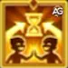
6.ª Habilidad – Meditación Profunda, Nueva Reliquia Legendaria: Nivel 30
Descripción en el juego: La duración de todas las mejoras aplicadas por Nebula y sus aliados, así como los efectos de sus primeros Artefactos, aumenta 2,0 segundos.
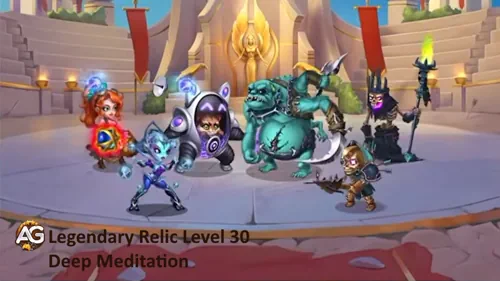
Meditación Profunda, Hero Wars Alliance.
Explicación de la habilidad: Dos segundos adicionales parecen modestos hasta que observas un ciclo completo de batalla. El efecto normal de nueve segundos del primer Artefacto pasa a durar 11 segundos, y la misma prolongación se aplica a las mejoras del equipo. El arma de Nebula proporciona Ataque Físico, fortaleciendo las fórmulas de habilidades físicas, Equilibrio y la siguiente ronda de presión del equipo.
Prioridad de evolución:Muy Alta — costosa, pero excepcional para equipos desarrollados que coordinan mejoras y activaciones de Artefactos.
Información del Desbloqueo de Reliquia en el Nivel 30
Tabla: Información del Desbloqueo de Reliquia en el Nivel 30
Información
Valor
Fragmentos de Reliquia Necesarios (Niveles 21–30)
1.750
Total de Fragmentos de Reliquia Necesarios (Niveles 0–30)
2.880
Bonificación Total de Ataque Físico (Niveles 0–30)
+43.001
Bonificación Total de Salud (Niveles 0–30)
+215.429
Ruta de Mejora de las Reliquias Legendarias de Nebula
Costes y Puntos Clave de las Reliquias Legendarias de Nebula
Nivel de Reliquia
Coste de Este Punto Clave
Fragmentos Totales
Recompensa Principal
1
50
50
Poder del Equilibrio
10
280
330
Serenidad para todo el equipo
20
800
1.130
Equilibrio para dos objetivos
30
1.750
2.880
Meditación Profunda
Consejos de Alexandre: El nivel 1 es un desbloqueo accesible y valioso, el nivel 10 es el primer gran aumento de seguridad y el nivel 20 es el punto que transforma de verdad el apoyo de daño de Nebula. El nivel 30 es el objetivo prémium para equipos completos capaces de aprovechar ventanas más largas de mejoras y Artefactos.
▶️¿Vale la Pena el Nivel 30 por 2.880 Fragmentos? Guía Detallada de la Reliquia de Nebula - Hero Wars Alliance
Vídeo: ¿Vale la Pena el Nivel 30 por 2.880 Fragmentos? Guía Detallada de la Reliquia de Nebula - Hero Wars Alliance🔊 ¡Audio en varios idiomas (principalmente en inglés) con subtítulos!
Mejores Aspectos para Nebula - Hero Wars Alliance
Los mejores aspectos de Nebula priorizan el Ataque Físico y después añaden suficiente resistencia para que continúe curando, purificando y potenciando a los aliados durante la batalla.
Los aspectos se muestran a continuación en el orden visual del juego. La Prioridad de Evolución de cada entrada indica el orden de inversión recomendado.
Orden recomendado: Invernal → Romántico → Predeterminado → Singularity Skin+ → Celestial → Primaveral. Prioriza Ataque Físico, después Salud, Armadura y Esquiva. Adelanta Singularity Skin+ si Nebula muere antes de apoyar al equipo; prioriza Celestial cuando el daño físico sea la principal amenaza.
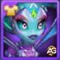
Aspecto Predeterminado — Agilidad +1.365
Como estadística principal de Nebula, 1.365 de Agilidad proporciona Ataque Físico +4.095 y Armadura +1.365. Combina una progresión útil con defensa, pero los dos aspectos directos de Ataque Físico ofrecen mayores ganancias ofensivas.
Coste en Piedras de Aspecto hasta el Nivel 60: 30.825 Piedras de Aspecto de Agilidad.
Prioridad de Evolución:Alta — 3.º – una mejora general sólida después de los dos aspectos de Ataque Físico.
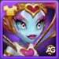
Aspecto Romántico — Ataque Físico +7.095
Este es el segundo aspecto directo de Ataque Físico de Nebula. Mejora la progresión de sus curaciones y bonificaciones y queda solo 25 puntos por detrás del Aspecto Invernal.
Coste en Piedras de Aspecto hasta el Nivel 60: 50.410 Piedras de Aspecto de Agilidad.
Prioridad de Evolución:Alta — 2.º – casi igual al Invernal y esencial para maximizar su rendimiento como apoyo.
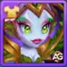
Aspecto Primaveral — Esquiva +2.960
La Esquiva puede evitar por completo los golpes físicos y encaja en equipos centrados en ese atributo, pero depende del azar y no mejora la progresión de las habilidades de Nebula.
Coste en Piedras de Aspecto hasta el Nivel 60: 50.410 Piedras de Aspecto de Agilidad.
Prioridad de Evolución:Baja — 6.º – una opción situacional para equipos de Esquiva, después de los aspectos ofensivos y las mejoras más fiables de Salud y Armadura.
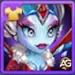
Aspecto Invernal — Ataque Físico +7.120
El Aspecto Invernal proporciona la mayor bonificación directa de Ataque Físico de Nebula. Esa estadística fortalece su daño, curación, aumento de Estadística Principal y las mejoras de Equilibrio.
Coste en Piedras de Aspecto hasta el Nivel 60: 50.410 Piedras de Aspecto de Agilidad.
Prioridad de Evolución:Muy Alta — 1.º – el mejor primer aspecto para fortalecer toda su función reformulada.
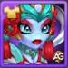
Aspecto Celestial — Armadura +10.650
El Celestial es la opción defensiva fiable contra equipos físicos. Ayuda a Nebula a mantenerse activa el tiempo suficiente para completar más ciclos de curación, purificación y mejoras.
Coste en Piedras de Aspecto hasta el Nivel 60: 50.410 Piedras de Aspecto de Agilidad.
Prioridad de Evolución:Media — 5.º – mejóralo después de Singularity Skin+ para obtener resistencia general, o antes si el daño físico es la principal amenaza.
Aspecto Singularity+ — Salud +213.290
Singularity Skin+ permite a Nebula permanecer más tiempo en la batalla para curar, eliminar efectos negativos y mantener potenciados a sus aliados. Es especialmente útil cuando la eliminan antes de que pueda apoyar al equipo.
Bonificación de Skin+: Salud +213.290 al nivel 60, el doble de los +106.645 del aspecto Singularity normal. Este valor sustituye la bonificación normal y eleva la Salud máxima a 952.039 con cualquiera de los dos talismanes.
Coste total de mejora: 50.410 Piedras de Skin de Agilidad.
Prioridad de Evolución:Media Alta — 4.º – la primera mejora defensiva general después de los tres aspectos ofensivos. La Salud ayuda contra el daño físico, mágico y puro; adelántalo si Nebula no sobrevive para usar sus habilidades de apoyo.
Prioridad de Evolución de los Artefactos de Nebula - Hero Wars Alliance
Los Artefactos de Nebula combinan progresión personal permanente, supervivencia y una mejora de Ataque Físico para todo el equipo. Como Equilibrio reemplaza sus ataques básicos por acciones de Apoyo, obtiene Energía más lentamente y tarda más en usar Proyección Astral, por lo que su Artefacto de Arma es poderoso, pero se activa con menos frecuencia de lo que su bonificación sugiere.
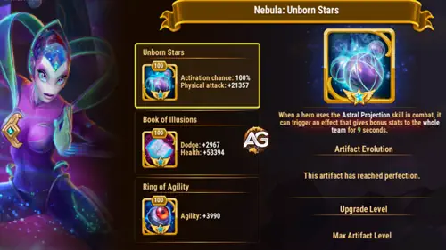
Artefactos de Nebula, Hero Wars Alliance.
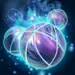
1.er Artefacto — Estrellas Nonatas
En el nivel 100, Estrellas Nonatas concede al equipo Ataque Físico +21.357, con un 100% de probabilidad de activación cuando Nebula usa Proyección Astral. Su efecto normal de nueve segundos pasa a durar once segundos después de Meditación Profunda. Sin embargo, Equilibrio convierte sus ataques básicos en acciones de Apoyo, reduciendo su obtención de Energía y retrasando Proyección Astral, por lo que esta mejora de equipo se activa con menos frecuencia que un Artefacto de Arma típico.
Prioridad de Evolución:Alta — 2.º – sigue siendo fuerte para equipos físicos, pero su activación más lenta lo hace menos constante que la progresión permanente del Anillo. Su valor también disminuye en equipos mágicos o mixtos.
2.º Artefacto — Libro de las Ilusiones
En el nivel 100, el libro proporciona Esquiva +2.967 y Salud +53.394. Estas estadísticas mejoran la supervivencia, pero no aumentan directamente la progresión de su Ataque Físico.
Prioridad de Evolución:Media — 3.º – complétalo después del Anillo y el Arma en la mayoría de los equipos. Súbelo al 2.º lugar cuando Nebula sea derrotada antes de completar sus ciclos de apoyo.
3.er Artefacto — Anillo de Agilidad
En el nivel 100, Agilidad +3.990 se traduce en Ataque Físico +11.970 y Armadura +3.990, ya que la Agilidad es la estadística principal de Nebula.
Prioridad de Evolución:Muy Alta — 1.º – su Agilidad siempre activa mejora el Ataque Físico de Nebula, todas las fórmulas renovadas que dependen de él y su resistencia física. A diferencia del Arma, este valor no depende de alcanzar su habilidad definitiva.
Prioridad de Evolución de los Glifos de Nebula
La ruta de glifos de Nebula comienza con Ataque Físico y Agilidad, y después añade Salud y defensas para que su ciclo de apoyo reformulado permanezca activo en combate.
Los glifos se muestran en el orden visual del juego; cada Prioridad de Evolución indica el puesto de mejora recomendado.
1.er Glifo — Ataque Físico
Estadísticas en el Nivel 80: Ataque Físico +8.340.
Esta es la forma más directa de fortalecer el daño de Nebula y todos los efectos reformulados que dependen del Ataque Físico.
Prioridad de Evolución:Muy Alta — 1.º – impacto máximo en la progresión de su apoyo principal.
2.º Glifo — Armadura
Estadísticas en el Nivel 80: Armadura +12.850.
La Armadura reduce la presión física y puede evitar que Nebula sea eliminada antes de su siguiente ciclo de apoyo.
Prioridad de Evolución:Media — 4.º – útil después de la progresión y la Salud, o antes contra adversarios con mucho daño físico.
3.er Glifo — Defensa Mágica
Estadísticas en el Nivel 80: Defensa Mágica +12.850.
La Defensa Mágica depende del enfrentamiento y no mejora los valores de sus habilidades, por lo que normalmente espera hasta completar la build principal.
Prioridad de Evolución:Baja — 5.º – mejórala antes solo cuando el daño explosivo mágico sea tu principal obstáculo.
4.º Glifo — Salud
Estadísticas en el Nivel 80: Salud +122.800.
La Salud protege tanto contra el daño físico como contra el mágico y da a Nebula tiempo para activar más mejoras y purificaciones.
Prioridad de Evolución:Alta — 3.º – la inversión de supervivencia más universal.
5.º Glifo — Agilidad
Estadísticas en el Nivel 80: Agilidad +2.110, lo que deriva en Ataque Físico +6.330 y Armadura +2.110.
La Agilidad proporciona a Nebula progresión ofensiva y una capa útil de defensa física al mismo tiempo.
Prioridad de Evolución:Alta — 2.º – mejórala inmediatamente después del Ataque Físico para obtener el mejor rendimiento combinado.
Habilidad de la Clase de Apoyo
En el nivel de clase 45, cada vez que Nebula daña a un enemigo o mejora a sus aliados, aplica a todos los enemigos un efecto de cuatro segundos que reduce la Armadura y la Defensa Mágica. Puede acumularse hasta cinco veces. El efecto utiliza el valor más alto entre 1% del Ataque Físico + 2.925 y 1% del Ataque Mágico + 2.925. Esto le da aún más motivos para priorizar el Ataque Físico.
▶️Vídeo: Guía del Rework de Nebula: Qué Mejorar Primero + Habilidades Explicadas - Hero Wars Alliance
Vídeo: Guía del Rework de Nebula: Qué Mejorar Primero + Habilidades Explicadas - Hero Wars Alliance🔊 ¡Audio en varios idiomas (principalmente en inglés) con subtítulos!
Sinergias de Nebula en Hero Wars Alliance
Estos compañeros protegen a Nebula, amplifican el mismo ritmo del equipo o se benefician enormemente de sus mejoras ofensivas basadas en el posicionamiento.
Isaac añade escudos y apoyo de Ataque Físico para los aliados del Camino del Progreso. Cuando los aliados se sitúan detrás de él, su apoyo de Penetración de Armadura complementa las enormes mejoras de Ataque Físico de Nebula y ayuda a convertir el daño físico en presión real.
Judge
Judge protege con escudos a los aliados de ambos extremos de la formación y añade control mediante Aturdimiento. Su protección ayuda al equipo a sobrevivir, mientras que la habilidad Equilibrio de Nebula potencia el conjunto de habilidades de Judge.
Julius
Julius sostiene al equipo con escudos y mejoras, mientras que su Artefacto aporta Probabilidad de Golpe Crítico. Nebula recompensa esa formación protegida con ataques más fuertes, ciclos más rápidos, purificación y efectos de Artefacto más prolongados en el nivel 30 de Reliquia.
Polaris
Polaris añade control mediante Aurora Boreal, mientras que Nebula ayuda a los aliados situados detrás de ella a recargar sus habilidades más rápido. Esto ofrece a los equipos centrados en el control más oportunidades para encadenar sus efectos incapacitantes.
Mejores Equipos para Nebula en 2026 - Hero Wars: Alliance
Nebula debe situarse junto a los héroes que necesitan recibir Equilibrio y Poder del Equilibrio. Las tablas van desde la retaguardia, a la izquierda, hasta la línea frontal, a la derecha, facilitando la comprobación de su posición y de los Talismanes equipados.
Análisis del Equipo n.º 1: Núcleo del Camino del Progreso
Julius y Judge proporcionan capas de protección a la formación, Isaac apoya la presión física y Eva completa el núcleo del Progreso. Nebula usa el Talismán de la Consistencia para maximizar la progresión de Ataque Físico que impulsa su curación y sus mejoras ofensivas.
Mejor Equipo de Nebula en 2026 n.º 1 — Camino del Progreso
Análisis del Equipo n.º 2: Presión de Esquiva con Eva
Esta formación ofrece a Nebula dos peligrosos compañeros de daño, Iris y Dante, mientras Eva y Electra refuerzan la estructura de Esquiva. La mejora simultánea de Equilibrio de Nebula crea una presión constante en lugar de depender de un único objetivo afortunado.
Mejor Equipo de Nebula en 2026 n.º 2 — Presión de Esquiva con Eva
Análisis del Equipo n.º 3: Presión de Esquiva con Octavia
Octavia sustituye a Eva para profundizar la identidad de Esquiva, mientras Iris y Dante siguen siendo las principales amenazas. Nebula proporciona mejoras de Ataque, purificación para todo el equipo en el nivel 10 de Reliquia y ventanas de mejoras más largas en el nivel 30.
Mejor Equipo de Nebula en 2026 n.º 3 — Presión de Esquiva con Octavia
Consejos de Alexandre para los Mejores Equipos: El Talismán de la Consistencia es la elección habitual en estas composiciones de mejores equipos, porque el Ataque Físico adicional aumenta los efectos principales de Nebula. Usa el Talismán de las Estrellas solo cuando el enfrentamiento demuestre que necesita más Armadura y Esquiva para sobrevivir.
Equipos Más Populares para Nebula en Hero Wars Alliance
Tabla: Mejores Equipos Populares de Nebula
Equipo
Julius, Judge, Nebula, Isaac, Astrid Lucas
Julius, Judge, Nebula, Ginger, Astrid Lucas
Julius, Judge, Nebula, Ginger, Jet
Julius, Judge, Nebula, Isaac, Ginger
Faceless, Jorgen, Nebula, K'arkh, Astaroth
Martha, Faceless, Nebula, K'arkh, Astaroth
Lars, Nebula, Celeste, Krista, Astaroth
Helios, Dorian, Orion, Nebula, Astaroth
Martha, Lars, Nebula, Krista, Astaroth
Conclusión — ¿Vale la Pena Desarrollar el Rework de Nebula?
Sí, especialmente si ya utilizas equipos del Camino del Progreso, de Esquiva o con dos carries. El rework aporta a Nebula algo más valioso que una cifra mayor: fiabilidad. Serenidad para todo el equipo recupera combates repletos de efectos negativos, Equilibrio para dos objetivos elimina la antigua lotería de sincronización, Desarmonía castiga las estrategias de Daño con el Tiempo y Meditación Profunda permite que los equipos cuidadosamente desarrollados mantengan sus ventanas más fuertes durante más tiempo.
Mi ruta práctica es el Talismán de la Consistencia, inversión en Ataque Físico, el nivel 10 de Reliquia como primer gran punto de control y el nivel 20 como punto de transformación. Si puedes alcanzar el nivel 30, Nebula deja de ser simplemente una poderosa fuente de mejoras y se convierte en la heroína que mantiene en marcha durante más tiempo el plan de todo el equipo.
¡Descubre nuevas habilidades con nuestras guías destacadas!
¿Te gustó nuestra guía sobre el rework y las Reliquias Legendarias de Nebula? ¿Hay algo que no entendiste o que te gustaría sugerir que cambiáramos? Participa en la sección de comentarios del Blog Alexandre Games para compartir tu opinión, preguntas e ideas de equipos. Haz clic en el botón de abajo para comenzar:
 3.963
3.963 16.704
16.704 3.803
3.803 952.039
952.039 150.958
150.958 26.995
26.995 55.518,8
55.518,8 26.366,2
26.366,2 3.073
3.073 1.564
1.564